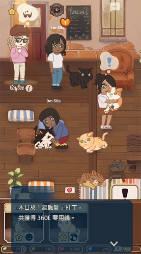
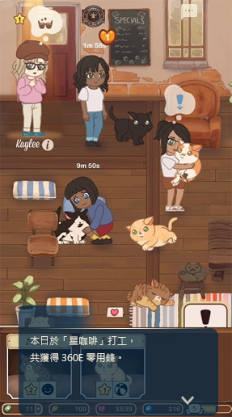

遊戲特色


 



透過手機內的訊息工具，
營造出隨時與他互動的感覺
與他交談的機會不僅限於會面。
見不到面時，可以透過遊戲內的訊息工具與他交換各種不同的對話。
通過互傳訊息，可以了解到會面中無從得知的他的想法，妳也可以把自己真實的一面傳達給他。
如此一來，他會對妳是怎麼樣的人有更深一層的認識。
透過這些無關緊要的閒聊，可以清楚「感受」透過這些無關緊要的閒聊可以清楚...
他將對 妳的視線 有所反應
透過移動妳的視線來對他表達妳的感情。
如果在會面與他談話當中出現的符號，請左右移動智慧型裝置看看。
螢幕面向哪裡，代表妳的視線移到哪裡，請傳達妳最真實的心情讓他知道吧。
妳的話語將持續 留在他的心裡
在與他對話的過程中，他將透過妳所選的選項，加深對「妳」的瞭解。累積多次談話後，他將越來越了解「妳真實的個性」。所以請用妳最實在的話語與心意，縮短與他之間的距離吧。
透過小遊戲，打工賺取零用錢
遊戲內進行打工小遊戲，並賺取零用錢(遊戲內虛擬貨幣)，並使用零用錢購買禮物送他，及其他可觸發特殊劇情之道具。
購買禮物將妳的心意傳達給他
將道具當成「禮物」送給他，會收到他傳來的感謝訊息。
配合每個角色的喜好購買禮物或特殊道具，將可觸發隱藏劇情。